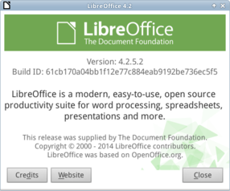
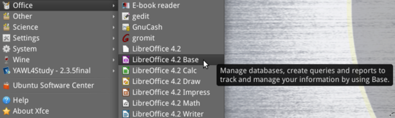
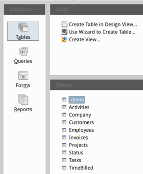

Requirements
Created sabato 21 febbraio 2015
Requirements
We review the basics of LibreOffice Base and the skeleton of xTimeCard, a working knowledge of LibreOffice or any office automation software is advisable. For this tutorial you need to install LibreOffice 4.2 or superior, you may use previous version but is not advisable because require rework of extensions and additional patches.
Install
Download from LibreOffice website and install for your operating system. Learn more about setup up LibreOffice from chapter 2 of “Getting Started with LibreOffice 4.2”.
Offline help
Add also a help in your favorite language, which comes handy while learning Base.
Access2Base
The main extension, contained in any version superior to LibreOffice 4.2, to code and customize xTimeCard is called Access2Base, which allows advanced user and developers to code using Microsoft Access simplified basic. If eventually you prefer to use OpenOffice, please download and install also the extension; follow instructions.
Version
If you already have LibreOffice installed, please check your version go in Help→About LibreOffice, eventually update or add extension following instructions.

JAVA
For this tutorial you will need to work with JAVA, therefore we suggest to install and configure.
Start LibreOffice Base
Many people use office automation software but not everyone has experience with open-source and most of all with database concepts. Here we will review the essential information to create the skeleton of xTimeCard.

Run
Now is the time to open LibreOffice Base and learn how to create a table, fill in data, query for results and filter. Go to your main menu and run LibreOffice Base. my-HEXAGON promotes open-source therefore pictures will be taken from Linux, for this tutorial we are using UbuntuStudio ver.14.04.
Views
A LibreOffice Base file contains a database, which can be flat or relational; it contains four objects: tables, queries, forms and reports. Each object has view, you may select from the menu or the left bar, every view has tasks on the right and objects in the bottom right.

@base @xtimecard @customize
Backlinks:
Home:Software:xTimeCard:Customize